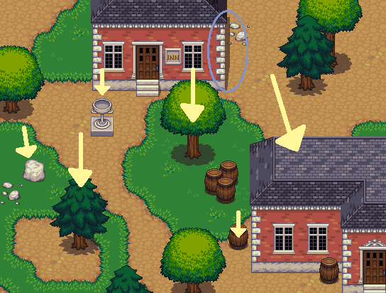

Liberated Pixel Cup styleguide¶
Preamble / Rationale¶
The purpose of this style guide is to allow pixel artists to collaborate on a top-down set of artwork and produce content that is stylistically coherent. Currently there is a lot of artwork in the commons for games, but it’s hard to get it to work together. We’ve been greatly inspired by work by the Tango Project and the work they’ve done. To that end we’ve intentionally built a style guide for artwork that should be easy to collaborate on for both intermediate and advanced pixel artists.
Inspired roughly by a variety of 16 bit era top-down games along the lines of Harvest Moon, Zelda: A Link to the Past, Final Fantasy, et cetera. Many games from this perspective are RPG like, but we hope this style guide will be useful for a variety of games... indeed, we chose this style because of its versatility: we hope farming/simulation games, strategy games, top-down shooters, puzzle games, and of course also RPGs, will be built from artwork built with this style.
This guide is not a tutorial on how to make pixel art generally, but rather a specification for a particular style. If you are new to pixel art entirely, we recommend you check out the resources at the bottom first before proceeding.
Grid size¶
The general tile grid is 32x32 with (possible) sub tiles at 16x16. The rationale being that the basic size of a square object (eg a chair or a character) is a 32x32 area. All base assets are designed to work at 32x32 tiling, and it’s recommended that you build yours to be so as well. However, for versatility tiling can happen at 16x16 resolution.
Perspective¶
The camera angle is top-down, roughly 60 degrees.
Rendering should be orthographic, which means there is no perspective... things do not get smaller as they move into the distance. If you’re using perspective techniques on your props or tiles, that’s wrong.
The following image is a 3d rendering (source) demonstrating orthographic projection. For examples of actual proportions, see existing body of pixel art.
Lighting, colors, and shading¶
Roughly a “toon style rendering” with medium-low levels of texturing. We want some detail, but not so much that things are so ornate that it might make collaboration difficult. We don’t want things to be “noisy” either. But detail is good. Texturing should have a toon-style; this is accomplished with medium to low amounts of texturing. Details should be used sparsely, so make them count!
Shade in blocks. Begin drawing by blocking out the object first, paying attention to its volume. Lines should be added afterward, and generally only around the edges and with very important details. Details should mostly be implied by form and color, not by outlines.

Lighting should primarily come from above. If there is any side directionality, it should come from the left, but not by much: keep it mostly center.
An example scene in blender with a sun light pointing in the appropriate location:

Left example shows from the “top-facing” camera used in this style; right example shows a sideview. Yellow “sun” with ray is the light source, big orange triangle on right is the camera.
Your light to dark color ramps should never all have the same hue. Vary the hue and saturation a bit as you go from light to dark, or your objects will look flat.
To create shadows or lowlights, once you have the main color the shade you want it to be move the hue (hsv selector) slightly towards the closest purple. To create highlight color, do the same but instead of purple and shade move the hue slightly towards the closest yellow and lighten it up. Adjust as necessary until it looks “right”.
Inside, things will be cooler in overall color, with slightly less contrast. This is doubly true for things like basements, caves and other underground areas.
All drop shadows should be done with the color #322125 at 60 percent opacity. If it makes sense, one may also provide a combined version of two tiles, so only one layer is needed to, say, put a house on a grass background.
Dithering should be used sparingly if at all. None of the base artwork has dithering.
There’s no specific palette required for Liberated Pixel Cup asset conformance, but it’s generally best to try to match to the colors used in the base set. So that said, here’s a palette that may be useful in producing matching assets.

Outlines¶

Outlines should be a darker version of the current color, or a dark color generally, not black. (Extreme circumstances obviously may have exceptions.)
Tile authoring¶
Details are simplistic. There are more details on the edges, and the center tile should be either one color or a very subtle pattern.
Occasional detail tiles should be thrown in to break the monotony of having a single repeating tile.
Edged tiles such as walls and floors should be arranged in a similar manner as the establishing art.
Demonstrating creating tiles that can be used to make more complex patterns.
Characters¶
Characters should have their own color palettes so that they stand out from the background. Drop shadows should follow the same rule as the tiles, #322125 at 60% opacity.
Characters are squashed, roundish, and not realistically proportioned. Bases are approximately two and a half heads tall and in the same perspective as the tiles. The base should fit in a 32x48 space and the clothing should fit in 48x64 space. The outlines should be black or near black, no selective outlining.

We have provided a character base that you can accessorize. (Of course, deviating from this base is perfectly fine if it makes sense; just try to keep your work within the style as described in this document and squashed stylization we keep generally for characters.)
If you are making an animation sheet that has multiple perspectives, you should generally vertically sort that sheet into rows in this order: back, left, front, right. Having the sprites arranged this way simplfies the code side of things a little bit.
These concepts can generally be expanded to monsters and other creatures, of course accounting for different proportions of said characters.
Props and other objects¶
Props should be colored so that they don’t blend in with the surrounding background tiles (vary color, brightness, and saturation to provide contrast).
There’s should be a large difference in lighting between the sides and the top of objects. Look at these objects as example:

Props should have shadows, or they will appear not to be part of the scene. Shadows should follow the same transparency blending rules as mentioned in the “lighting and shadows” section above.
Things that are important enough to be worth repeating¶
- No pure colors!
- Vary the hues of your color ramps!
- Highlighted areas are yellow-ish, shadowed areas are purple-ish.
- Block your art out first, including shadows, before adding detail.
Useful, generalist resources¶
These articles do not directly apply to the style we are building here, but may help people get involved:
Pixel Tutorials:
- http://tkool.jp/fancontents/lecture/graphic/ – It’s in Japanese, but the tutorials are thorough and the art is all you really need to figure out what they’re teaching.
- http://gas13.ru/v3/tutorials/ – Excellent for teaching the why of pixel art, not just the how. “So you want to be a Pixel Artist” is highly recommended.
- http://www.pixeljoint.com/forum/forum_posts.asp?TID=11299 – A good general course on what pixel art is and how to start making it.
- http://opengameart.org/content/les-forges-pixel-art-course – A pixel art course that’s so good that we translated and mirrored it. Originals in French here: http://www.lesforges.org/tag/pixel%20art
- http://www.natomic.com/hosted/marks/mpat/ – Decent set of resources, though most important is maybe the shading piece which describes how to avoid the dreaded “pillow shading” style and think about lighting placement.
Tiling:
- http://www.squidi.net/mapmaker/musings/m091016.php – Describes patterns for reusable tiling
- http://www.codeproject.com/Articles/106884/Implementing-Auto-tiling-Functionality-in-a-Tile-M – another tiling pattern, simpler than the “blob” pattern above